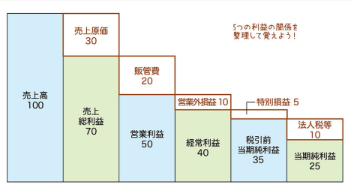
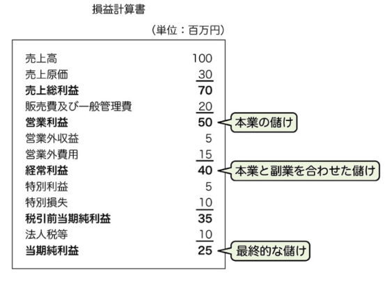
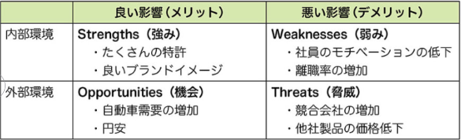
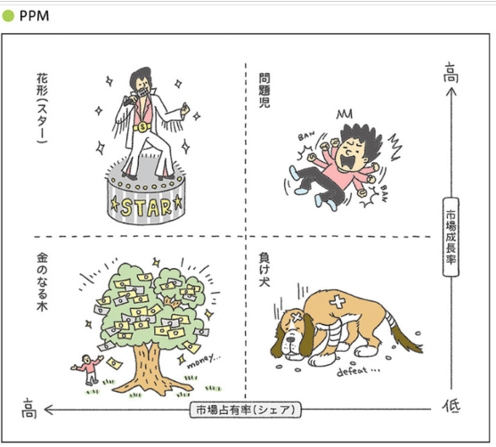
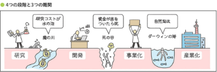
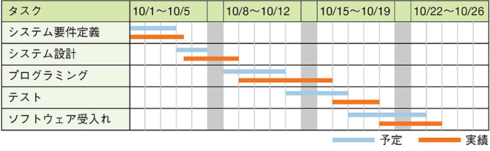
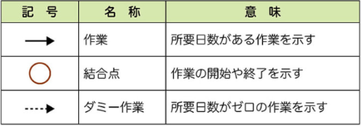
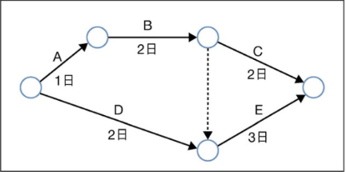

ITパス暗記ノート
1章
- 経営理念
- 企業の存在意義
- ビジョン
- 企業が目指す将来の姿
- 経営戦略
- ビジョンを実現するための具体的な行動計画
- CSR
(Corporate Social Responsibility) - 企業の社会的責任
- グリーンIT
- 企業の社会的責任
- ソーシャルビジネス
- 子育てや介護、環境問題などの社会的課題を、ビジネスの手法を活用して解決していく企業活動
- SDGs
- 持続可能な世界を実現するための17の国際目標
- OJT
（On-the-Job Training） - 業務の実践を通じた教育訓練
- Off-JT
（Off-the-Job Training） - 仕事を離れて行われる教育訓練（研修等）
- HRM
(Human Resource Management) - 人的資源管理
- HRテック
- HRMのうち、AIやIoTといったITを活用する手法
- 職能別組織
（機能別組織） - 業務を専門的な機能に分けて構成する組織
- 事業部制組織
- 事業部を単位として構成する組織。一個の会社に事業部ごとに総務、営業などが複数ある。
- マトリックス組織
- 一人の人が事業部ごとにある複数の部署に所属する組織
- プロジェクト組織
- プロジェクトごとに作る一時的な組織
- カンパニー制組織
- 各事業部を独立した会社とみなして構成する組織
- CEO
（Chief Executive Officer） - 経営の最高責任者
- CIO
（Chief Information Officer） - 情報システムを統括する最高責任者
- CTO
（Chief Technology Officer） - 技術経営の最高責任者
- パレート図
- 棒グラフと折れ線グラフを組み合わせたグラフ。重要なデータが横軸の左端に記載されるため、重要な項目を一目で確認できる
- ABC分析
- データをパレート図で表し、重要度で3つのグループにランク分けする
- レーダーチャート
- 放射状の図
- 散布図
- 相関関係は「正の相関」「負の相関」「相関なし」の3つ
- 回帰分析
- 過去を分析して、将来を予測する
- ブレーンストーミング
- 複数人でアイディアを出し合う
- 損益分岐点
- 売上高と総費用が等しくなり、利益も損失もゼロ（赤黒トントン）になる売上高または販売数量
- 貸借対照表
- 企業の全財産が記載された表
資本金は貸借対照表の純資産の部に分類される
- 自己資本比率
- 自己資本÷総資本×100
- 総資本回転率
- 売上高÷総資本
- 売上総利益
- 売上総利益 ＝ 売上高 − 売上原価
- 営業利益
- 営業利益 ＝ 売上総利益 − 販売管理費
- 経常利益
- 経常利益 ＝ 営業利益 ＋ 営業外収益 − 営業外費用

- 当期純利益
- 当期純利益 ＝ 最終的な利益

- キャッシュフロー計算書
- 現金の出入りを「営業活動」「投資活動」「財務活動」の3つに分類して計算する
- ROE
(Return On Equity） - 自己資本利益率＝当期純利益/自己資本×100
自己資本に対して、どれだけの利益を出したかを表す指標
大きいほど得 - 著作権
- 著作権は、著作物を創作した時点で自動的に発生する（役所などへの申請は不要）
- 著作権法
- 著作権法は、本、音楽、写真、美術作品、取扱説明書、プログラム、データベースを保護する
プログラム言語、アルゴリズム、プロトコルは、著作権法では保護されない - 特許権
- 高度な発明に与えられる権利
- 実用新案権
- 高度でない考案に与えられる権利
- 意匠権
- デザインに与えられる権利
- 商標権
- マークに与えられる権利
- 不正競争防止法
- 営業秘密を保護する法律
- パブリシティ権
- 有名人の写真を勝手に撮影し販売することなどを禁止する権利
- クロスライセンス
- 権利者同士がお互いに使用を許諾すること
- サイバーセキュリティ基本法
- サイバー攻撃から国を守るための基本理念を定めた法律
対象者は、国全体（国、地方公共団体、企業、国民）である - 不正アクセス禁止法
- 不正なアクセスを禁止する法律
なりすましによるアクセス：他人のIDとパスワードを不正利用して、コンピュータにアクセスすること
セキュリティホールからのアクセス：セキュリティホールが悪用されて、コンピュータにアクセスすること - ウイルス作成罪
- コンピュータウイルスを作成、提供、供与、取得、保管する犯罪
- 労働基準法
- 労働時間、休憩時間、休暇など、労働条件の最低基準を定めた法律
- 労働者派遣契約
- 派遣先の企業が労働者に指示を出せる
- 請負契約
- 発注者は請負会社の社員（労働者）に指示は出せない
- フレックスタイム制
- 始業時間と終業時間を労働者が決められる制度
- 裁量労働制
- 業務の進行方法や勤務時間などを労働者の裁量に委ねる
- コンプライアンス
- 法令：法律や条例など
社内ルール：業務マニュアルなど
企業倫理：業務上守らなければいけない道徳や規範など - SWOT分析
- 自社を取り巻く経営環境を把握できる
内部環境とは、自社の努力で変えられる項目
外部環境とは、自社ではコントロールできない項目

- PPM
(Product Portfolio Manegement) - 資源を投下すべき製品、撤退すべき製品を分析
花形と問題児には投資を続け、金のなる木と負け犬には追加投資は不要

- リーダー
- 業界トップシェアの企業
- チャレンジャー
- 2位以下の企業。リーダーの商品やサービスと差別化する
- フォロワー
- リーダーの成功事例を真似する
- ニッチャー
- リーダーが無視するような小さな市場で戦う
- M&A
(Mergers and Acquisitions) - 会社を買収・合併すること
- アライアンス
- 企業同士が提携すること
- ジョイントベンチャー
- 複数の企業が共同出資して作った会社
- IPO
（Initial Public Offering） - 新規公開株式。自社の株式を株式市場に新規に公開すること
- マーケティングミックスの4P
- 目標達成のために自社がコントロール可能な４つの手段
「Product」「Price」「Place」「Promotion」 - RFM分析
- Recency（最終購入日）・Frequency（購入頻度）・Monetary（購入金額）の3指標で顧客を評価し、優良顧客や休眠顧客などに分類してマーケティング施策に活かす手法
- オピニオンリーダー
- 新しく出た商品をいち早く買い、その感想を友達やSNSなどに広める消費者。イノベーター理論のアーリーアダプターと同じ
- UX
(User Experience) - 商品やサービスなどを実際に利用することによって得られる体験
- BSC
（Balanced Scorecard） - 「財務」「顧客」「業務プロセス」「学習と成長」の4つの視点から業績評価を行う手法
- CSF
(Critical Success Factor) - 重要成功要因。戦略目標を達成するために必要となる具体的な要因
- KPI
（Key Performance Indicator） - 重要業績評価指標。目標達成に向けたプロセスの達成度を定量的に評価する指標
- 一元管理の4兄弟（4用語）
- ERP：社内の経営資源を一元管理
SCM：社外も含めて製品情報を一元管理
SFA：営業ノウハウを一元管理
CRM：顧客情報を一元管理 - ERP
(Enterprise Resource Planning) - 企業の持つ資源＝「ヒト」「モノ」「カネ」「情報」を一か所に集めて管理し、有効活用するという考え方
- SCM
（Supply Chain Management） - 「供給連鎖管理」、原材料調達から消費者への提供までの一連の流れを企業間で最適化する。需要と供給のバランスを整え、必要な商品を必要な量・タイミングで届ける体制を構築
- SFA
(Sales Force Automation) - 営業支援システム。営業部門のメンバー行動、商談の進捗状況とその結果を見える化し、営業の生産性向上や業務改善を実現するためのツール
- CRM
(Customer Relationship Management) - 顧客情報を一元管理し、営業・マーケティング・カスタマーサポートの成果を高めるための仕組み
- オープンイノベーション
- 組織外の知識や技術を積極的に取り込んで技術革新を起こすこと
- ハッカソン
- 開発者が一堂に集まってアイデアを出し合い、短期間のうちに製品を作り、その成果を競うイベント
- API
（Application Programming Interface） - ソフトウェア同士が情報や機能をやり取りするための“窓口”や“接点”を定めた仕組み
- オープンAPI
- 外部に公開されたAPI
- APIエコノミー
- 他社のサービスを利用し、自社だけでは実現できない価値を作ること
- 3つの難関
- ・魔の川は研究段階と開発段階の間にある難関
・死の谷は開発段階と事業化段階の間にある難関
・ダーウィンの海は事業化段階と産業化段階の間にある難関

- PoC
(Proof of Concept) - 概念実証。新しいアイデアが技術的に実現可能かの検証
- PoV
(Proof of Value) - 価値実証。アイデアがビジネスにとって価値があるかを検証
- キャズム
- 商品が市場でシェアを拡大する際に障壁となる溝
「アーリーアダプター」「アーリーマジョリティ」の間 - イノベーター理論
- 「イノベーター」「アーリーアダプター」「アーリーマジョリティ」「レイトマジョリティ」「ラガード」の5つに分類
- ロードマップ
- 技術開発戦略のために作成する（経営者も理解する必要がある）。横軸に時間、縦軸に技術を配置する
- RFID
(Radio Frequency Identification) - 電波を用いて触れずに情報をやり取りする技術
定期券、電子マネー、社員証、学生証など - ICタグ
- ICチップ（集積回路）とアンテナで構成される装置
- NFC
（Near Field Communication） - 近距離無線通信（数cm）。RFIDの規格の一つ。交通系ICカードで使用。
NFCとQRコードの違いは、NFCはメモリに何度も読み書きできること。 - GPS
（Global Positioning System） - 3つ以上の人工衛星の電波を使って位置情報を特定するシステム
- 教師あり学習
- 正解データを与える
- 教師なし学習
- 正解データを与えない
- 強化学習
- 報酬を与える
- ニューラルネットワーク
- 人間の神経細胞が信号をやり取りする仕組みを模したモデル
活性化関数で、次のニューロンに渡す値を出力する - ディープラーニング
- コンピュータ自身がニューラルネットワークを使って大量のデータを分析することで、データの規則性を見つけ出す
- 生成AI
- テキスト、音声、静止画、動画などのオリジナルコンテンツを自動的に生成するAI
ディープラーニングで学習 - プロンプトエンジニアリング
- 生成AIに与える指示（プロンプト）を最適化すること
- ディープフェイク
- 本物と見分けがつかないような偽物の画像や動画を作成する手法
- ハルシネーション
- 誤った情報をもっともらしい情報として生成する現象
- 人間中心のAI社会原則
- ・人間の尊厳が尊重される社会
・多様な背景を持つ人々が多様な幸せを追求できる社会
・持続性ある社会
「AI中心」ではなく「人間中心」の選択肢が正しい - CAD
(Computer Aided Design) - コンピュータを使って設計図を描くシステム
- CAM
(Computer Aided Manufacturing) - 設計図のデータを元にして、工作機械を操作するためのプログラムを作成するシステム
- コンカレントエンジニアリング
- 製品の開発プロセスを同時並行で行う
目的は「開発期間の短縮」 - 受注生産方式
- 顧客からの注文を受けてから生産を開始する生産方式
- 見込生産方式
- 生産開始時の計画に基づいて見込み数量を生産する生産方式
- JIT生産方式
(Just in time) - 必要な物を、必要なときに、必要な量だけ生産する方式
トヨタの方式。別名うかんばん方式 - ライン生産方式
- 流れ作業。多くの人数要。少品種、多量生産
- セル生産方式
- 1人または数人の作業員が、生産の全工程を担当する方式
少人数、多品種、少量生産 - リードタイム
- 所要時間。生産のリードタイムは着手してから完了するまでの時間
- 不良率
- 欠陥のある製品の割合
- 歩留まり率
- 欠陥のない製品の割合
- EC
（Electronic Commerce) - 電子商取引
- ロングテール
- あまり売れない商品でも、その種類が多くなると、大きな売上になること（アマゾンなど）
<=>パレートの法則 - フリーミアム
- 基本機能を無料で提供し、追加機能を有料で提供するビジネスモデル
- CGM
（Consumer Generated Media) - 一般消費者（個人）がインターネットを通じて、自らの情報を不特定多数に向けて発信するメディアのこと。ブログや口コミサイト、SNSなど
- レコメンデーション
- 購入履歴などの顧客のデータを分析して、各個人に最適な商品やサービスの情報を提供する技術
- エスクローサービス
- 売り手と買い手の間に入って決済を仲介するサービス
「代金を支払ったのに商品が配送されない」トラブルを未然に防ぐことができる - IoT
(Internet of Things) - 自動車や家電などの「モノ」が直接インターネットにつながって、お互いに情報をやりとりすること
- センサー
- 物理量を検出して電気信号に変える装置
- アクチュエータ
- 電気信号を力学的な運動に変える装置
- IoTゲートウェイ
- IoTデバイスとIoTサーバ間の通信を中継することでネットワークの負荷を軽減する装置
- Society 5.0
- 「仮想空間」と「現実空間」を融合させたシステム。代表例：自動運転
- 組込みシステム
- 特定の機能を実現するシステムである（ハードウェア＋ソフトウェア）
- 組込みソフトウェア
- 特定の機能を実現するためのソフトウェアである
- 情報システム戦略を立案する際
- 「あるべき姿」を明確にしたうえで、全体最適を考え、経営戦略に基づいて計画を立てる必要がある
- EA
(Enterprise Architecture) - 企業や政府など、大きな組織の情報システムを最適化するための手法
- エンタープライズサーチ
- 企業内のさまざまなシステムに蓄積されているデータを、一元的に検索するための仕組み
2章
3章
4章
5章
(Systems of Engagement)
(Data Flow Diagram)
（Business Process Reengineering）
（Business Process Management）
(Robotic Process Automation)
（Infrastructure as a Service）
（Platform as a Service）
（Software as a Service）
(Desktop as a Service)
(Business Intelligence)
ビッグデータとデータウェアハウスの違いは、ビッグデータのほうが「データ量が多い」「データの更新頻度が高い」「データの種類が豊富」
システム化構想の立案とシステム化計画の立案に分類される
(Return On Investment)
(Request For Information)
ベンダーの一次審査と情報集めが目的
(Request For Proposal)
(Non-Disclosure Agreement)
6章
(SLCP)
計画が立てやすい、修正作業が苦手、大きいプロジェクト向き
| 木の幹 SLCP |
枝 工程 |
葉 下位工程 |
備考 |
|---|---|---|---|
| 企画プロセス | システム化構想の立案プロセス | 経営上のニーズの確認 | |
| システム化計画の立案プロセス | 費用とシステム投資効果の予測（ROI） | ||
| 要件定義プロセス | 業務要件 （業務要件、ユーザーのニーズを明確化） |
組織及び環境要件 | 組織の構成、従業員の数、設備等 |
| システム要件 | 開発プロセスのシステム要件のこと | ||
| 開発プロセス | システム要件定義 | 機能要件 | ユーザーのヒアリングで出た必要な機能 |
| 非機能要件 | ヒアリングで出てこない機能。応答時間やセキュリティなど | ||
| システム設計 | システム方式設計 | システム要件を「ハードウェア」「ソフトウェア」「手作業」に振り分ける | |
| ソフトウェア要件定義 | ソフトウェアの要件（機能や性能）を決める。主にインタフェースとデータ | ||
| ソフトウェア方式設計 | ソフトウェア要件（機能や性能）をプログラムの単位まで分割する | ||
| ソフトウェア詳細設計 | 「プログラムの単位まで分割された要件」をさらに「コーディングができる単位」まで分割する | ||
| プログラミング | |||
| テスト | 単体テスト | プログラムに誤りがないことを検証する ホワイトボックステスト |
|
| 結合テスト | プログラム同士のインタフェースが合うかを検証する ブラックボックステスト |
||
| システムテスト | システム要件（機能と性能）が仕様通りに動作するかを検証する | ||
| 運用テスト | 本番環境でシステムを運用し、業務要件どおりにシステムが動作することを検証する | ||
| ソフトウェア受け入れ | ソフトウェア導入 | ||
| ソフトウェア受け入れ支援 | |||
| 運用プロセス | |||
| 保守プロセス | ソフトウェア保守 | ||
７章
(2) スケジュール（期限）
(3) コスト（費用）
（Work Breakdown Structure）



・リスク転嫁：他人にリスクを取ってもらう（保険）
・リスク軽減：リスクを減らす
・リスク受容：リスクを受け入れる（何もしない）
8章
・「実行」に近い用語が入っている選択肢は、Do
・「評価」に近い用語が入っている選択肢は、Check
・「改善」に近い用語が入っている選択肢は、Act
(Service Level Management)
SLMでは主にPDCAの手法を使ってサービスレベルを維持・改善する
(Service Level Agreement)

（Business Continuity Management）
(Business Continuity Plan)
（無停電電源装置）
9章
（例）整数型：num
変数の代入には「←」を使う
（例）num ← 3
変数の宣言と初期化は同時に行える
（例）整数型：num ← 3
・配列から要素を取り出すには「[ ]」を使う
10章
Webシステム：インターネットとWebブラウザを使用。専用ソフトがいらない
シンクライアント：クライアントは最小限の機能のみ。クライアント側にデータが残らない（保存されない）
（Network Attached Storage）
（レスポンスタイム）
（Total Cost of Ownership)
（Mean Time Between Failures）
・MTBF ＝ 稼働時間の合計 ÷ 故障の回数
（Mean Time To Repair)
・稼働率 ＝ MTBF ÷ (MTBF ＋ MTTR)
直列システムの稼働率 ＝ 装置Aの稼働率 × 装置Bの稼働率
並列システムの稼働率 ＝ 1 − (1 − 装置Aの稼働率) × (1 − 装置Bの稼働率)
11章
14章：ネットワーク
- RSS
- Webサイトの見出しやリンク、要約などを記述するフォーマット（Really Simple Syndication）
- Cookie
- アクセスしてきたブラウザに、Webサーバからの情報を一時的に保存する仕組み